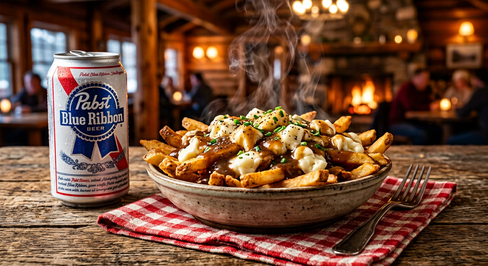
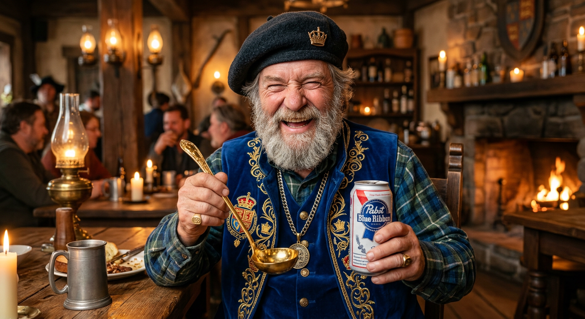
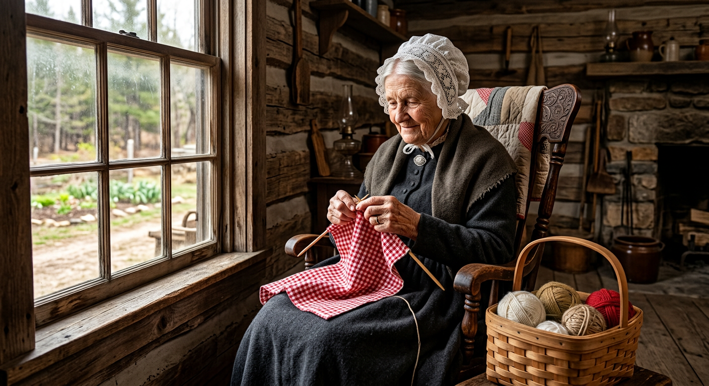
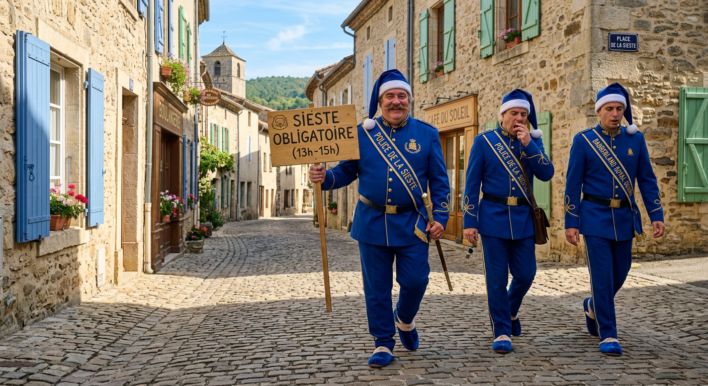

Bienvenue au Babberland
Le Royaume du Babberland est une micronation narrative francophone fondée le 12 octobre 1847 dans la forêt de Plantagenet par Babber Ier l’Ancien sur la nappe vichy de son épouse Babette, sous la bénédiction et la signature à la queue d'un castor patriote.
Ce portail réunit l'intégralité du Canon Consolidé 2026-I, les six Livres des Chroniques de l'Ancien, les registres d'Avis royaux, les données structurées, la galerie photo ultra-réaliste et l'atlas géographique interactif.
Les Cinq Régions Royales (7 000 Âmes)
🏛️ Pabst City (3 500 âmes)
Capitale du Royaume, siège du Palais Royal, de la Banque Nationale, du Double Aqueduc et du comptoir historique McBabber's n° 1.
Capitale🏔️ Les Monts Froissés (1,20 m)
Alpes nationales créées le 15 juillet 1962 avec les déblais de la piscine de Babber II. Ascension officielle en quatre secondes.
Altitude : 1,20 m⚓ Port Babette (800 âmes)
Cité portuaire fondée par Babette-Marine, réputée pour ses quais en bois d'épinette, son phare blanc couronné et sa pêche contemplative.
Maritime🌿 Grass City (1 200 âmes)
Station balnéaire et capitale du chanvre légal. Fournit les fibres douces et indéchirables pour les billets de la Série B.
Devise : « Pousse »📸 Galerie Photo Ultra-Réaliste du Babberland
Collection photographique haute définition capturant avec réalisme les figures historiques, les lieux légendaires, l'architecture et la gastronomie du Royaume du Babberland.
👑 Babber Ier l’Ancien (1798–1889)
Le Père fondateur du Royaume rédigeant la Constitution sur la nappe vichy le 12 octobre 1847, assisté par le castor patriote aux portes de la forêt de Plantagenet.
Portrait Historique
🍲 La Poutine Royale & La Pabst Fraîche
Symbole suprême de la Parité Poutine Pure (PPP) : frites dorées croustillantes, fromage en grain kouik-kouik à 72 dB et canette glacée à 3,2 °C.
Gastronomie & Monnaie
🏛️ Pabst City & Le Double Aqueduc
Vue majestueuse des Arches Jumelles du Double Aqueduc de François-Babber (1904) franchissant la rivière au cœur des forêts d'automne de la capitale.
Architecture & Capitale
👑 Sa Majesté Babber Ier le Louche
Portrait régnant du Souverain en béret couronné, arborant son regard plissé bienveillant, sa louche d'or et sa canette royale de Pabst.
Roi Régnant
🛌 Babber Ier le Dormeur (1875–1959)
Photographie du Souverain de l'Âge Horizontal dormant sereinement dans son hamac de parade au-dessus du sol pendant ses 45 ans de règne.
Âge Horizontal🍔 McBabber’s — Premier Comptoir (1986)
Cliché vintage d'octobre 1986 montrant la taverne originale en bois rond à l'orée du bois lors de l'inauguration par le Roi Babber II.
Patrimoine Boreal
⚓ Port Babette & Son Phare Couronné
La cité maritime fondée par la Princesse Babette-Marine, ses pontons en épinette et son phare blanc surmonté de la couronne royale au soleil couchant.
Littoral & Port
🏔️ Les Monts Froissés (1,20 m d'altitude)
Cliché commémoratif au sommet des Alpes nationales créées le 15 juillet 1962 avec les terre-pleins de la piscine royale. Ascension franchie en une enjambée.
Géographie & Humour
👵 Reine Babette Ire de Plantagenet
Reine consort fondatrice en 1885 tricotant la nappe vichy sacrée au coin de la fenêtre dans son berceau d'érable.
Fondateurs📐 François-Babber l’Aqueducien (1832–1914)
Le Prince Régent et Grand Ingénieur examinant les plans du Double Aqueduc avec ses instruments d'arpenteur en laiton.
Ingénierie & Bâtisseur⚓ Princesse Babette-Marine (1836–1916)
La Princesse des Eaux et du Littoral observant les navires de pêche au port à travers sa longue-vue en cuivre en 1900.
Littoral & Marine⚖️ Reine Colette-Pabst & Le Babbersgate (1991)
La Présidente de la Commission Royale d'enquête présidant avec son marteau de buis face au pot de cornichons scellé à la cire.
Justice & Histoire🥄 Reine Linéa & La Sauce Secrète
La Première Gardienne de la Sauce Royale touillant le chaudron d'argent en tablier de chanvre brodé d'or.
Gastronomie Royale🎣 Prince Rambo du Fjord (né en 1962)
Le Grand Pêcheur contemplatif au bord des rapides du fjord avec sa canne en frêne sans hameçon.
Dynastie & Nature
🛌 La Garde Dormante (Police de la Sieste)
Patrouille royale en pantoufles de velours et bonnets de nuit veillant sur la tranquillité publique pendant les heures légales (13h-15h).
Institutions & Humour
🪙 Coffret Proof 2026 — Monnaie Royale
Collection numismatique officielle comprenant le Babber bimétallique or/argent au castor couronné et ses Babetons divisionnaires.
Numismatique & ÉconomieEncyclopédie Consolidée 2026-I
L'édition 2026-I est la référence canonique autonome qui fait foi. Elle réunit en sept livres l'histoire, la numismatique, la généalogie illustrée et le colophon.
Les Chroniques de l'Ancien (Livres I à VI)
Livre I — Les Fondations (1798–1889)
L'enfance de l'Ancien, la course maudite de 1816, le pacte castoral et la nappe du 12 octobre 1847.
7 TranchesLivre II — Les Bâtisseurs (1889–1914)
La régence de Babette Ire, François-Babber l'Aqueducien, les 42 bancs et le Jour de l'Eau de 1904.
7 TranchesLivre III — L'Âge Horizontal (1914–1959)
Le long règne de Babber le Dormeur, 45 ans passés à un mètre du sol, l'Article 1 et la sieste constitutionnelle.
7 TranchesLivre IV — L'Ère Balnéaire (1959–1998)
Babber II, la création des Monts Froissés en 1962, McBabber's (1986) et le procès du Babbersgate.
7 TranchesLivre V — L'Union des Règnes (1998–2010)
Les jumeaux Honoré-Pabst et Henri-Grain, le Pabstgate de 2004 et la Guerre des Cornichons arbitrée par le Déchiré.
7 TranchesLivre VI — Le Siècle qui Louche (2010–2026)
Babber Ier le Louche, le vrai fromage de 2018, la Série B en chanvre, Ti-Babber et la Nuit des Sept Mille.
7 TranchesLes Corps d'État & Institutions (Livre VIII)
🧀 L'Ordre des Gardiens du Kouik-Kouik
Auscultation acoustique matinale du fromage en grain à ≥ 72 dB. Tout grain muet est déchu pour « gratins civils ».
🛌 La Garde Dormante (Police de la Sieste)
Patrouilles en pantoufles insonorisées de 13 h à 15 h à vitesse bridée à 0,72 m/s. Condamnation au hamac forcé.
🍺 L'Office de la Fraîcheur (Police du Frigo)
Garantit la température légale (+2,0 °C à +3,8 °C). Cloche de la honte en cas de bière tiède (> 4,0 °C).
🥄 La Confrérie du Secret Brun
Présidée par Linéa et Ginette : garde de la recette secrète à la cuillère d'argent (8 s) et des 317 pots historiques.
Dictionnaire des 18 Personnages Historiques
La Parité Poutine Pure (PPP)
1 Babber (1 ฿) ≡ 1 Poutine Régulière Royale (fromage 180g, frites 260g, sauce 140ml) + 1 Pabst Fraîche (355ml à 3,2 °C).
1 Babber (฿) = 24 Babetons (bt) (la Caisse entière).
🧮 Convertisseur Monétaire Royal
Atlas Temporel & Géographie du Royaume
Consultez l'évolution cartographique de 1830 à 2026 :